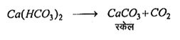

Q.21 : बॉयलर में प्रयुक्त होने वाले जल पर संक्षिप्त टिप्पणी लिखिए।
उत्तर- बहुत से कारखानों में जल की भाप बनाने के लिए बॉयलरों का प्रयोग होता है। यदि जल में किसी प्रकार की अशुद्धियाँ विशेषकर कैल्सियम व मैग्नीशियम के बाइकार्बोनेट, सल्फेट व क्लोराइड, सिलिका, ऐलुमिनियम आदि उपस्थित होती हैं तो ये बॉयलर के लिए हानिकारक होती हैं। ऐसे जले के प्रयोग से बॉयलर में निम्नलिखित हानिप्रद परिणाम हो सकते हैं -
(i) पपड़ी का बनना (Formation of Scale)- बॉयलरों के अंदर जब जल, वाष्प। बनकर उड़ता है तो उसमें उपस्थित पदार्थ बॉयलरों की दीवारों पर जम जाते हैं तथा इससे कुछ समय में मोटी पपड़ी बन जाती है, इसको बॉयलर पपड़ी (boiler scale) कहते हैं।
बॉयलर में कठोर जल में उपस्थित लवण निम्नलिखित प्रकार से क्रिया करके बॉयलर पपड़ी बनाते हैं –

पपड़ी बनने से निम्नलिखित हानियाँ होती हैं -
(अ) पपड़ी ऊष्मा की कुचालक होती है। अतः जल को वाष्पीकृत करने की क्षमता को कम कर देती है।
(ब) कभी-कभी अस्थायी कठोर जल से प्राप्त पपड़ी, नलिकाओं तथा वाल्वों आदि में जम जाती है।
(स) पपड़ी के अचानक फट जाने से जल का सम्पर्क लाल तप्त सतह से हो जाता है। जिससे उस समय ज्यादा मात्रा में भाप बनने लगती है जिससे विस्फोट होने का भय रहता है।
बॉयलर में पपड़ी का बनना निम्नलिखित तरीकों से रोका जा सकता है -
(अ) बॉयलर में मृदु जल का ही प्रयोग करना चाहिए तथा जल से अशुद्धियों को निकाल देना चाहिए।
(ब) जल को बॉयलर में जल्दी-जल्दी बदलते रहना चाहिए।
(ii) अपक्रमण तथा फेनन (Priming and Foaming)- बॉयलर के अंदर जल के अचानक उबलने को अपक्रमण कहते हैं। यह घटना जल में उपस्थित तेलीय पदार्थों, कार्बनिक पदार्थों, क्षारों तथा निलम्बित अशुद्धियों के कारण होती है।
जब कठोर या अशुद्ध जल को बॉयलर में उबाला जाता है तो अचानक झाग या फेन (foam) तेजी से बनना शुरू हो जाता है इस घटना को फेनन कहते हैं। झाग का बनना जल की कठोरता तथा घुली हुई अशुद्धियों के कारण होता है।
अपक्रमण व फेनन से निम्नलिखित हानियाँ होती हैं -
(अ) बॉयलर में जल के तल का सही अनुमान नहीं हो पाता है।
(ब) भाप का दाब कम हो जाता है, जिससे ऊष्मा का अपव्यय होता है।
(स) जल के कणों से मिश्रित भाप, मशीन के भागों में चली जाती है इससे मशीन के पुर्जी की हानि का भय रहता है।
अपक्रमण व फेनन की रोकथाम निम्नलिखित उपायों द्वारा की जाती है –
(अ) जल में चूना, कैस्टर ऑयल, मैलिक अम्ल, टैनिक अम्ल आदि मिला देना चाहिए।
(ब) बॉयलर में उत्पन्न, न चिपकने वाले पदार्थों, जिन्हें स्लज कहते हैं, को निकालते रहना चाहिए।
(स) प्रारम्भ में ही जल को अशुद्धियों रहित करना चाहिए।
(iii) संक्षारण (Corrosion)- जल में उपस्थित पदार्थ, जैसे- मैग्नीशियम क्लोराइड (MgCI2) आदि जल की अभिक्रिया के कारण अम्ल पैदा करते हैं।
MgCl2 + H2O → Mg(OH)CI + HCI
जिसके कारण बॉयलर की सतह निरंतर नष्ट होती रहती है तथा बॉयलर की आयु घटती रहती है। अतः बॉयलर का जल अम्लोत्पादक पदार्थों से रहित होना चाहिए। जहाँ जल को स्वच्छ करने के साधन नहीं मिलते, वहाँ जल में सोडियम कार्बोनेट मिला देना चाहिए जिससे उपस्थित अम्ल नष्ट हो जाते हैं।